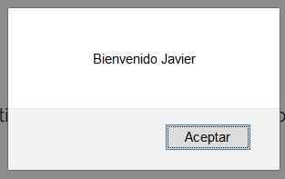
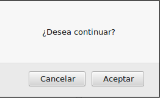
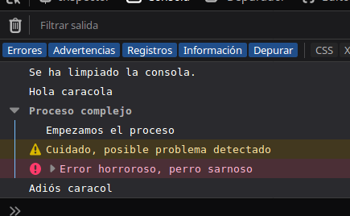
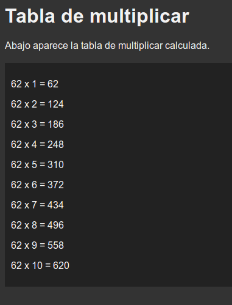

A function is just a piece of code with a name that can be called so the instructions within can be executed. We can create our own functions to extend the language functionality or use some of the functions the language provides.
The alert() function can be used to display a message on the screen. We shouldn't spam this function because it can be blocked by the browser, but it can be useful to display information while we are debugging our code.
alert ("Message");
let nombre="Javier"
alert("Bienvenido " + nombre);

Prompt is similar to alert, it will show a message but also a textbox. The text the user provides will be returned by the function, so it is commonly used to ask for information.
If the user don't type anything, prompt() will return null (a special value).
let valor = prompt("Message", "Default value"); //with a default value (separated with a comma from the message)
valor = prompt ("Message"); //without a default value
let edad = prompt("¿Cuántos años tienes?", "38");
if (edad != null) {
alert("¡Vaya, " + edad + " años ya! Cómo pasa el tiempo...");
}
Ejecuta este código y corrige el error en el segundo alert().
let edad = prompt("¿Cuántos años tienes?", "38");
if (edad != null) {
alert("¡Vaya, " + edad + " años ya! Cómo pasa el tiempo...");
alert("Y el año que viene " + edad + 1);
}
Usando como base el código de index.html que está en el directorio del ejercicio Ej3.1, haz que al abrirse se ejecute un script que al ejecutarse pregunte por un nombre de usuario y a continuación escriba un mensaje de bienvenida en la web.
Nota: usa la función prompt() para pedir información y la función alert() para mostrarla.
Another function can be confirm that will ask something and will return true (if 'ok' button was pressed) or false (if the 'Cancel' button was clicked). Execute the code below:
let elección = confirm("¿Desea continuar?");
alert("Has elegido " + elección);

Console allow us to write information in the web browser debugging console. The most important method is console.log( "mensaje" ); But we have more options available in case we need them.
console.clear();
console.log("Hola caracola");
console.group("Proceso complejo");
console.log("Empezamos el proceso");
console.warn("Cuidado, posible problema detectado");
console.error("Error horroroso, perro sarnoso");
console.groupEnd();
console.log("Adiós caracol");

Escribe el código que habría que usar en la web console para que ocurra lo siguiente:
Modifica el ejercicio anterior para que calcule el área de un triángulo.
Nota: fórmula del área de un triángulo: área = base * altura /2
Crea el código necesario para que se pregunte por las notas de 3 exámenes y a continuación calcule la nota media. La nota media se imprimirá en un alert() y en la consola.
Los microcontroladores y microprocesadores simples no son especialmente buenos usando números con decimales. Por ejemplo, el célebre Arduino usa el microcontrolador ATmega328P y el antiguo Spectrum el Z80. Ninguno de los dos chips tienen una función específica para calcular un seno o un coseno (o cualquier otra función trigonométrica, exponencial o logaritmo). ¿Cómo se calcula entonces? Usando un desarrollo en serie de Taylor.
La función coseno (usando radianes) puede aproximarse así:
coseno (x) = 1 - (x^2)/2 + (x^4)/24 - (x^6)/720 + (x^8)/40320
La función seno, así:
seno (x) = x - (x^3)/6 + (x^5)/120 - (x^7)/5040 + (x^9)/362880
Con cada suma o resta se aumenta la precisión (es una suma infinita), por lo que podemos elegir la precisión que necesitamos. Crea una web que pida un número de radianes y calcule el seno y el coseno, además de estas aproximaciones.
En la web deberá aparecer al menos una imagen y un párrafo de explicaciones (por ejemplo sobre taylor o sobre la función seno y coseno). El resultado se mostrará en la web console además de en un alert.
Nota:
x^2 = x*x
x^4 = x*x*x*x
Más información:
https://namoseley.wordpress.com/2012/09/26/arduinoavr-and-zx-spectrum-sin-routines/
Let's solve a problem.
Alerts can be very useful to display information, but can get very annoying very soon and it can be blocked by the browser easily (even by mistake without the user noticing it). Also it is not possible to customize the output using alerts. So a method to improve the display of information is needed.
To explain this part, we are going to solve again the exercise Ej3.1. First of all take a look at index.html file in the Ej4.1 folder:
Fragment of index.html in the exercise Ej4.1 folder:
...
<p>Crea un script que al ejecutarse pregunte por un nombre de usuario y a
continuación escriba un mensaje de bienvenida en la web.</p>
<p>Nota: usa la función <code>prompt</code> para solicitar información, pero
no uses la función <code>alert</code>. para mostrarla. En su lugar usaremos
selectores de CSS y la división vacía que está justo debajo de este
párrafo llamada <em>resultado</em> (para destacarla se ha pintado de verde).</p>
<div id="resultado"></div>
...
As you can see, we have a new tag div (a logical division in the document) at the end of the body. Right now the div is empty (there is nothing inside), but it has an atribute called id="resultado".
That id will allow us to select it in javascript to introduce and get text and other tags inside. To do so, in javascript we will use a special function called document.querySelector().
Let's explain the function in the next section.
This function will return the tag with the id that we specify as the parameter. That way we will be able to change the tag, remove it, change the text inside it or even change the CSS applied.
let tag = document.querySelector("#idWanted"); //Has to be written with the # before the id
To see an example in use, continue to the next section.
Note: we can use a CSS selector in general as the argument of the function, not just and id. But, for now, that will be more than enough.
Now that we know how to get a tag, we can modify its content using innerHTML, write this piece of code in the code.js file.
//1.- Preguntamos por un nombre
let nombre="";
nombre = prompt("Introduzca un nombre");
//2.- Recuperamos la etiqueta div con id=resultado
let resultado = document.querySelector("#resultado"); //recuerda: se pone la # antes del id
//3.- Escribimos el resultado creando un párrafo en la división:
resultado.innerHTML="<p>¡Hola "+nombre+"!</p>";
As you can see, using innerHTML we can modify the content of a tag and even create new tags inside it (in this case we have created a new paragraph).
Remember: Javascript is case-sensitive, so resultado.innerhtml, Resultado.innerHTML or document.queryselector("#resultado") will throw an error.
Crea un script que al ejecutarse pregunte por un nombre de usuario y a continuación escriba un mensaje de bienvenida en la web.
Nota: usa la función prompt() para solicitar información, pero no uses la función alert(). para mostrarla. En su lugar usaremos selectores de Javascript y un div vacío cuyo id será resultado.
Usando los archivos del ejercicio anterior, haz que se pida un número al arrancar la página web. A continuación se calculará el doble, el triple, la mitad y el cuadrado del número introducido. Cada valor calculado se mostrará en un párrafo diferente dentro de la división resultado.
Por ejemplo, si el número es 7, dentro de resultado se mostrará:
El doble de 7 es 14. El triple de 7 es 21. El cuadrado de 7 es 49. La mitad de 7 es 3.5.
Cada valor aparecerá en un párrafo diferente dentro de la división resultado.
Modifica el fichero index.html para que use la hoja de estilos styles.txt (nota: no puedes cambiarle el nombre a este fichero).
A continuación, genera el código javascript necesario para que al abrir la página web se pidan dos números. A continuación se calculará la suma, la resta, la multiplicación y la división de los dos números y se mostrará el resultado en la división con id resultado.
Queremos comparar el rendimiento de dos inversiones. Un depósito en el banco A nos dará un 2.25% de interés anual, mientras que otro depósito en el banco B nos dará un 1,75%.
Haz un script que pida la cantidad de dinero a depositar y calcule cuánto obtendremos si metemos el dinero en el depoósito del banco A y cuánto en el banco B.
La cantidad a depositar se escribirá en la división llamada cantidad, el resultado del banco A en la división bancoA y la del banco b en la división bancoB.
El resultado se mostrará como en este ejemplo:
Dinero a invertir: 1250 € Depósito del banco A (2.25%): 31.25 € Depósito del banco B (1.75%): 21.875 €
Modifica el script para que nos muestre también cuánto dinero de diferencia obtendríamos. Haz que la diferencia se muestre en la división llamada cantidad.
Dinero a invertir: 1250 € Diferencia (A-B): 9.375 € Depósito del banco A (2.25%): 31.25 € Depósito del banco B (1.75%): 21.875 €
Crea una página web que pregunte por un número e imprima la tabla de multiplicar de ese número. Utiliza este código para la página HTML:
Código HTML:
<!DOCTYPE html>
<html>
<head>
<meta charset="utf-8"/>
<title>Pruebas de programación web</title>
</head>
<body>
<h1>Tabla de multiplicar</h1>
<p>Abajo aparece la tabla de multiplicar calculada.</p>
<div id="tablaMultiplicar"></div>
</body>
</html>
Tendrás que:
Código CSS:
body{
color: #f2f2f2;
background-color: #333333;
font-family: Arial, Helvetica, sans-serif;
}
#tablaMultiplicar{
background-color: #222222;
padding: 10px;
margin-top: 20px;
width: 80%;
}

Javier Mancera Fernández
https://www.youtube.com/@Profesorinfo-x